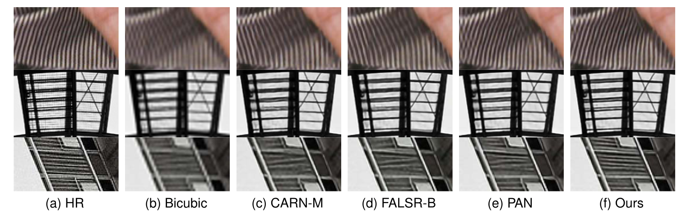
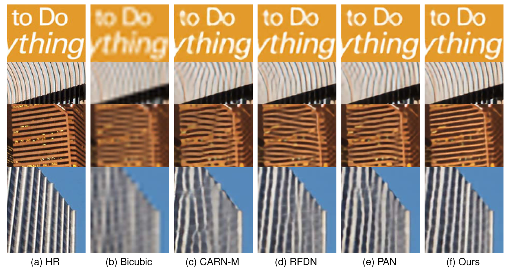

Abstract
Single Image Super-Resolution (SISR) tasks have achieved significant performance with deep neural networks. However, the large number of parameters in CNN-based met- hods for SISR tasks require heavy computations. Although several efficient SISR models have been recently proposed, most are handcrafted and thus lack flexibility. In this work, we propose a novel differentiable Neural Architecture Search (NAS) approach on both the cell-level and network-level to search for lightweight SISR models. Specifically, the cell-level search space is designed based on an information distillation mechanism, focusing on the combinations of lightweight operations and aiming to build a more lightweight and accurate SR structure. The network-level search space is designed to consider the feature connections among the cells and aims to find which information flow benefits the cell most to boost the performance. Unlike the existing Reinforcement Learning (RL) or Evolutionary Algorithm (EA) based NAS methods for SISR tasks, our search pipeline is fully differentiable, and the lightweight SISR models can be efficiently searched on both the cell-level and network-level jointly on a single GPU. Experiments show that our methods can achieve state-of-the-art performance on the benchmark datasets in terms of PSNR, SSIM, and model complexity with merely 68G Multi- Adds for ×2 and 18G Multi-Adds for ×4 SR tasks.
Paper & Code & Demo
Experimental Results
Table 1. IMAGE SUPER-RESOLUTION RESULTS WITH SCALE FACTORS OF 2, 3, 4 ON BENCHMARK DATASETS

Table 2. EFFICIENCY COMPARISON ON DIV2K VALIDATION SET FOR X4 UPSCALING.

Result Visualization
-

Figure 1. Visual comparisons among SOTA lightweight models in ×2 image super-resolution. The test image patches are from Set14 and Urban100. Note that the results of FALSR-B are based on our test with the pre-trained model which is released by the authors. The results of CARN-M and PAN are directly taken from the authors’ release. Our method has better reconstruction performance on image details, such as thin stripes on the clothes and edges of windows.
Figure 2. Visual comparisons among SOTA lightweight models in ×4 image super-resolution. The test image patches are from Set14 and Urban100. Note that the results of RFDN are based on our test with the pre-trained model which is officially released by the authors. Our method shows better reconstruction performance and less deformation on image details such as texts and stripes.
Citation
@ARTICLE{9992250,
author={Huang, Han and Shen, Li and He, Chaoyang and Dong, Weisheng and Liu, Wei},
journal={IEEE Transactions on Circuits and Systems for Video Technology},
title={Differentiable Neural Architecture Search for Extremely Lightweight Image Super-Resolution},
year={2023},
volume={33},
number={6},
pages={2672-2682},
doi={10.1109/TCSVT.2022.3230824}
}
Concat
Li Shen, Email: mathshenli@gmail.com
Weisheng Dong, Email: wsdong@mail.xidian.edu.cn